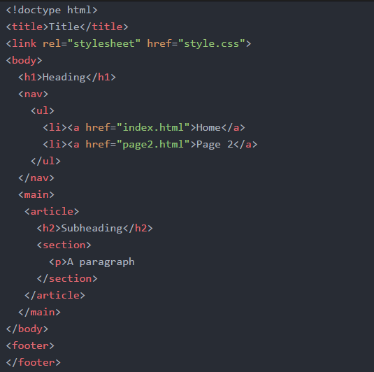

Discovery Log
These discovery logs were used to record what has been learnt throughout the course of Web Foundations
Week 2
This was the first week of teaching for Web Foundations where a summary of what to expect from the unit was covered.
This week we discussed whether or not operating systems are necessary anymore due to the rise in use of cloud storage and devices such as chromebooks.
We then went on to discuss what our most useful websites are. I chose reddit.com because: The website design is clear to understand and there are forums on pretty much anything
Week 3
Where information is collected and what information is collected about us was the topic of this weeks practical.
Ths concepts of confidentiality, availability and integrity of information was discussed in the lecture. The key fact learnt in this weeks lecture and practical, was that information is constantly being collected about us and that we need to be cautious of everything. Even simple questions like “where did you go to school” can be used to gain access to lots of personal information.
Social engineering is a common technique for gaining information about people. Some key aspects of that being: phishing, tailgating, shoulder surfing, trojans etc.
Week 4
We started working on our literature reviews this week. A literature review is: A formal evaluation of the written academic research on a particular subject. It is important to make sure literature reviews don’t have personal opinions, uncritical summaries and needs to not sound like an essay.
Good sources are necessary for a good literature review. Good sources:
- Appear in refereed journals
- Refers to other good sources
- Written by a known/respected author
Week 5
The focus of this week was academic writing. Academic writing needs to be evidence based, evaluative, structured and objective. In academic writing formality is essential, and making sure to avoid exclamations and emotive language is important. When referencing, we need to use APAv6 which structure is lastname, firstInitial., & lastname, firstInitial.(Year). Title.journalName, volume(issue), doi(if available)
Week 6
We got introduced to html (hypertext markup language) this week. The typical layout for a html document is: 
We can use winSCP to upload files to our virtual machine, and therefore host our sites. The commands in the secure shell to do that are:
cd folder name ⏎
Http-server
Then the site can be accessed by using the IP address of the VM
The best site to go to to learn various aspects of html coding is the mozilla developer website.
Week 7
In week 7 we submitted our literature reviews so did not learn any new content.
In this week I looked into the differences between HTML5 and HTLM4. I found that HTML5 has included new elements, which used to be used be java-script based hacks in HTML4, directly into the language, for example the <canvas> and <video> tags. Also elements like <article> and <section> have been included so that less <div> tags are necessary.
Week 8
Cascading Style Sheets(CSS) are used for styling websites, and should be saved in an external file so that it can be imported into multiple pages without having redundant code.
An exmple of styling:
p{
Background: red;
color: white;
}
CSS3 also alows for some basic animaton through transitions and transforms, and includes selectors like :hover which applies a certain style when an element is hovered over
This was demonstrated in the lecture where there was a demonstration on how to make the star wars opening using html and css formatting. The main thing I discovered this week is that I should probably make sure I watch all the star wars films in order to feel like a true computer science student.
Week 9
The focus of this week was ensuring we were using our IDE’s effectively. It was recommended to use Atom.io to edit html and css pages. There are many packages and libraries available to customise the environment and make it more efficient.
One of the most useful packages is the multi-cursor one, which allows editing of multiple lines at the same time. This is particularly useful when adding markup to large bodies of text, e.g making sure there is the
before every paragraph. Another useful one was the preview package which has a live preview next to the code you edit, to allow you to view what the html page will look like
Week 10
This week's focus was on using images. There were many concepts learnt this week to effectively style images in a html page. The img element is the most effective way of including a picture in the site. To do this you do <img src="..." alt="...">. The alt tag is necessary for every image as it gives a text description of what an image is, this is useful for accessibility purposes as it allows a screen reader to describe the image.
Also learnt that you can use the code tag to change sections of text into a code font.
You can change the height and width inside the img tag, but it is better to have that referenced in the style sheet than to do it directly in the element. And the key thing learnt this week was DO NOT USE THE STYLE ATTRIBUTE. If individual images need to be styled they can be referenced with ID selectors in css stylesheet. And to style multiple at the same time, we can use classes to reference them.
*include things about changing style on hover, have a picture with external style sheet for just this page*
There are also advanced css selectors that cn be used to style elements if certain conditions are met. Examples below:
:target changes elements if that element is targeted
:hover changes elements if it is hovered over
:active changes elements if it is selected
Figure can be used to contain an image and a figcaption like shown below
Week 11
This week our lecture consisted of making an advent calendar, using html css and javascript. The css used was complex as it included transitions for the doors of the advent calendars. The @keyframes selector specifies the animation to be carried out. So in an element it would sat animation:ftwo 30s infinite; or something along those lines.
In this week I also continued to complete the work on images from the previous weeks. I experimented with changing the size of images based on the size of the page. As shown below:

This is done using the picture element which creates responsive images. The media attribute specifies what should be done if a page meets a certain criteria. The @media selector can be used to style a page based on the size of the page as well. This is particularly useful for styling specifically for mobile sites.
You can have multiple sources so that a browser can use its prefered file type for the image and you can also use srcset to add different file types for images based on resolution.
The lasagne picture below supports multiple file types

Week 12
This week was the week the mark scheme for this website was released, so most of this week was spent planning how to go about making the website. In the practicals we looked more into using MDN to find the standards for writing good html and css. Using semantic elements is a key feature. It is more effective to use <main> than it is to use <div id = “main”> or using <article> instead of grouping text under the <div id=”text”>. This allows for better styling and is easier for screen readers to decipher.
Validation was also introduced. Using the w3 validator it is possible to check whether the code for html and css is written correctly. It can detect errors so can ensure that the site is properly marked up in html5. Validation links for this site are at the bottom
Week 13
Addressing the web was the topic of this week. URLS and hyperlinks were discussed, as well as using anchor tags to place links in HTML. Links can be both to external sites, e.g linking to the bbc website, or they can also be internal. This means that they are links to html files inside the folder directories.
Some key things to remember when naming files are: use all lower case, do not use spaces. Make sure the file type is correct.
Also to navigate through folder directories use /folder/subfolder/file.html. Using /./ changes the location in the folder to the above folder. For example if on the file.html and wanting to link to a picture in the “folder” folder, the path would be /./file.css
Week 14
This week we focused on usability. Usability is ensuring that a site is easy for everyone to use, essentially making the user interface easy to understand and smooth. It is key to think about the user demographics when designing a site.
We were told about the usability engineering process which is the process involved to make sure the site is usable. This is a cycle between design implementation and evaluation.
The key thing I learnt was that it is best not to be too experimental with site design, ensuring that the site is easy to use an follows the structures that people are most used to is the best way to have good usability on a site.
Week 15
The topic this week was accessibility. Accessibility and usability can get confused, but essentially if a site is accessible it is also usable. It is important to make sure a site is accessible because otherwise it is technically breaking the law. Simple ways to ensure accessibility are alt tags on pictures, aria labels and tab indexing to make things clearer for screen readers, and transcripts on videos. http://www.w3.org/WAI/is the best site to look at to ensure accessibility.
Week 16
This week we looked at scalable vector graphics (SVG). Images often reduce in quality when they are sized larger than the original image, dues to pixel by pixel definitions. This also means that the bigger the image the larger the file size. SVG images however use vectors to mathematically calculate how an image should appear, this means that an image which has been scales up or down in size would take up the same amount of memory.
Here is an example of an SVG picture:

This is the same picture that is at the footer of this page, yet it still has the same quality.
Week 17
This week we looked at some basic javascript.
I focused on being able to add a transcript to the video found on the homepage. To do a transcript .vtt files are used. It is also possible to use .srt file but it does not include as many customisation options and can also be more complicated to write.

The time start, time finish and the content of the caption for that duration are all that is needed for a vtt file.
To implement that with the video, the <track> tag is used in the video element.